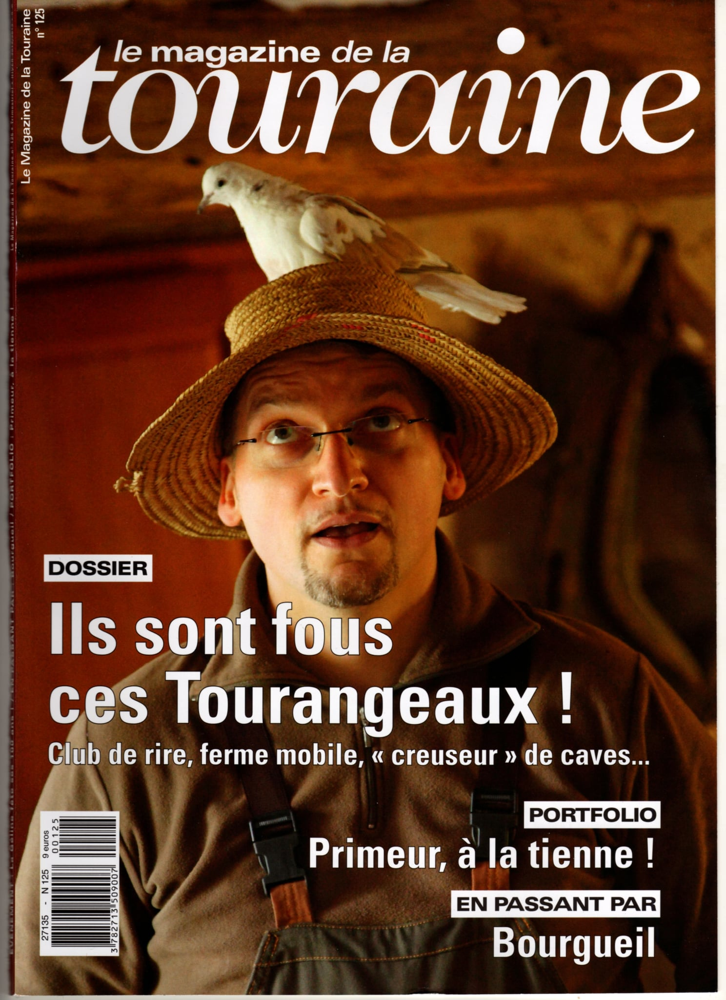

le fermier bus'onnier

Cédric, fondateur
« Dans une conjoncture sombre pour le monde agricole, un jeune homme a décidé de sortir la ferme de son enclos et d'aller à la rencontre du public. Un projet sinon fou, du moins original, sur lequel personne n'aurait osé parier un euro. Et pourtant, ça marche ! »
Le Magazine de la Touraine, par Sébastien Drouet — Hiver 2012/2013
Les racines et la vocation
Je ne suis pas issu du monde agricole, mais j'ai grandi à la campagne. Je garde un profond respect pour la nature, dont j'ai découvert les secrets grâce à ma « deuxième famille ». Dès mon plus jeune âge, ma nourrice et son mari m'ont transmis le goût du travail de la terre et du soin aux animaux. J'ai ramassé les œufs, récolté les pommes de terre en plein champ et arpenté les rangs de vigne. J'aime dire que j'ai été nourri au sein et aux légumes du jardin.
Formation et premières expériences
En 1996, j'obtiens un brevet de technicien agricole « Services en Milieu Rural » dans l'Indre (36). Diplôme en poche, je travaille d'abord dans le secteur de l'animation, puis je me dirige vers l'éducation spécialisée où j'occupe les fonctions de moniteur-éducateur.
En 1999, je postule pour travailler dans un CAT (aujourd'hui ESAT) qui projette de créer une ferme pédagogique. En 2000, j'effectue un stage d'Attelage Adapté à la Fédération Nationale Handi-Cheval à Parthenay (79) : « Encadrement des activités d'attelage auprès et avec des personnes en difficulté ». J'y rencontre Monsieur Yves Decavele, passionné d'attelage et ex-président de la fédération handi cheval : une rencontre marquante.
En 2002, je décide de professionnaliser cette passion en suivant une formation d'animateur et gestionnaire de ferme pédagogique au Centre d'Enseignement Zootechnique de la Bergerie Nationale de Rambouillet (78).
Une rencontre éclairante
Au cours de mes recherches documentaires au centre de documentation et d'information de la Bergerie Nationale, j'ai rencontré Karine Lou Matignon — journaliste, écrivaine et scénariste en cours d'écriture d'un nouvel ouvrage. La thématique de la relation entre l'homme et l'animal est son cheval de bataille, mais elle s'intéresse également à l'enfance.
Parmi ses ouvrages les plus importants : Sans les animaux, le monde ne serait pas humain (2000), La Plus Belle Histoire des animaux (2000) et La Fabuleuse Aventure des hommes et des animaux (2001). Mon livre de chevet est : Enfants et animaux, des liens en partage, Éditions de La Martinière, 2012.
Le déclic et l'indépendance
De retour de ma formation à la Bergerie Nationale, je m'efforce de mettre en place une ferme dans le parc de mon établissement employeur. Si les moyens financiers sont présents, la direction n'est pas en phase avec mes propositions. Les besoins structurels et de fonctionnement essentiels à une telle activité ne sont pas pris en compte.
C'est la mort dans l'âme que je décide de quitter mon emploi. Je suis alors très attaché à mon équipe et aux animaux, notamment aux chevaux, mes principaux alliés pour les bienfaits qu'ils apportent aux adultes porteurs de handicap.
L'envol de la Ferme Bus'Onnière
L'opportunité m'est donnée de retourner à Rambouillet, non plus comme élève, mais comme responsable animalier au sein de l'équipe d'animation. En 2003, un bilan de compétences confirme mon besoin viscéral de lier l'animal et l'humain. Je décide alors de créer une ferme pédagogique itinérante, concept découvert lors de ma formation.
Pour concrétiser ce projet, je réalise une étude de faisabilité approfondie. En mai 2004, j'obtiens le permis EB et le CAPTAV (Certificat d'Aptitude au Transport d'Animaux Vivants). En juin 2004, le projet reçoit le prix « Défi Jeunes » de la région Centre et du Loiret — une dotation de 4 000 € qui permet l'achat d'un camion, d'une bétaillère d'occasion et d'un ordinateur. En février 2005, l'entreprise est officiellement créée. À l'été 2010, l'exploitation s'installe à la Grange Théâtre de Vaugarni, à Pont-de-Ruan. En décembre 2015, fin de l'activité sous forme d'entreprise individuelle ; durant deux ans, l'activité est hébergée par l'association du théâtre.
2017
Enseignants, directeurs de théâtre, aides-soignantes, animateurs — nous venons tous d'horizons différents, mais nous avons tous croisé la route de Cédric et de sa Ferme Bus'Onnière. Convaincus que cette formidable initiative pédagogique doit perdurer, nous nous mobilisons à ses côtés.
L'association « La Ferme Bus'Onnière & [cie] » voit officiellement le jour.